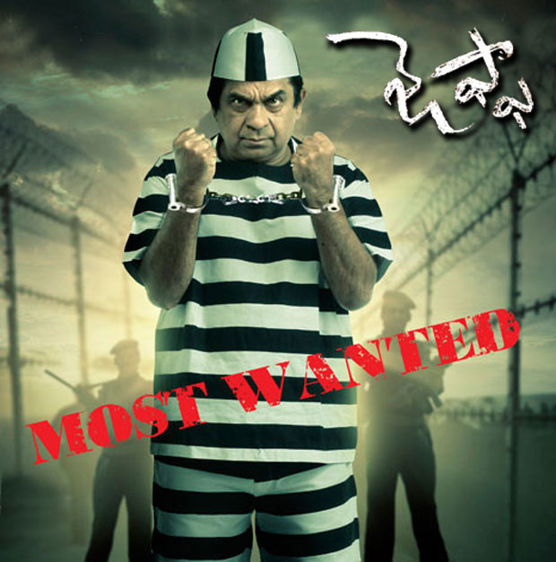

Describing myself is one of the toughest tasks to do, but it’s fascinating too, to put it to words. I believe our traits – be they positive or negative – make us the person we are to the world. When it comes to my personality, people can have different opinions because they see what they want to see in me, and that’s okay. So, I would describe myself from the paradigm I see myself from in different aspects.
For me, I love the feeling I can get after watching a movie. There is so much emotion that can be packed into a film, and I am rather young so it is just neat to see all these stories I have never had the experience to see. Movies are just a magical experience for me where I can escape to somewhere. I can feel whatever the filmmaker wants me to feel, and that is just happening. My actual life fizzles away.
